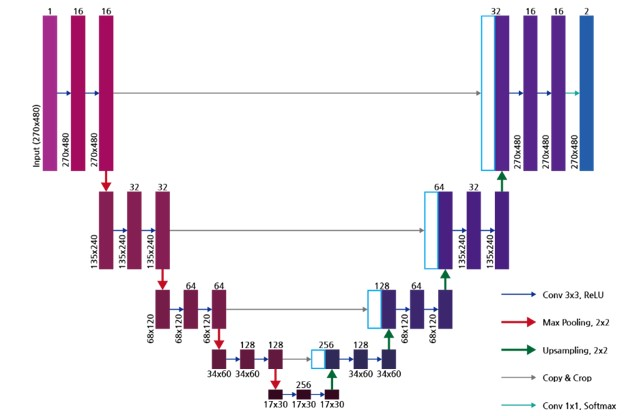
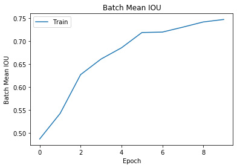
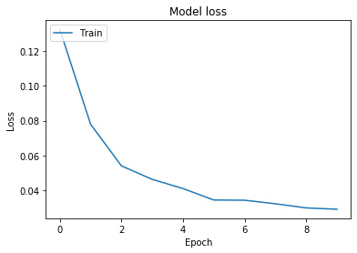

Car Image Segmentation (U-Net)
도로 및 차량 이미지에 적용된 U-Net 모델의 이미지 Segmentation 결과
개요
한국의 도로 및 차량 이미지를 활용
U-Net 바탕으로 딥러닝 Semantic Segmentation Model.
Convolution이 진행되는 동안 소실되는 위치 정보를 Decoder 영역에
Concatenate 함으로써 Decoder 영역에서 위치 정보와 문맥 정보를 취합해 보다 정확한 영상 분할을 수행함.

U-Net 모델 Network
결과
적절한 Segmentation이 이루어졌음.
loss function의 결과, Dice coefficient에 1-score과 -ln(score) 큰 차이를 보기 어려움.

Batch Mean IOU Graph
(x-epoch, y-Batch Mean IOU)

Model Loss Graph
(x-epoch, y-Loss)
구축환경 및 소스 코드
Open Framework: Tensorflow
Train image: 7016, Test image: 368
Source: Copyright(c) 2020 by PublicAI. All rights reserved
All pictures, codes, writings cannot be copied without permission.